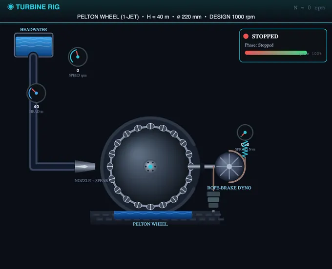
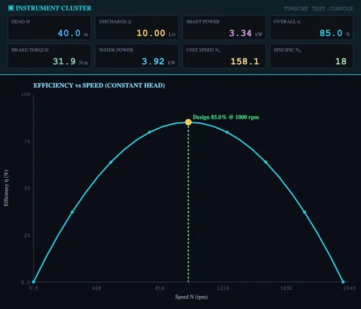
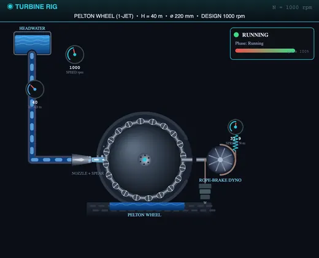

Hydraulic Turbine Test Rig Simulator
3D Model — Hydraulic Turbine Test Rig Simulator
Free hydraulic turbine test rig simulator. Run constant-head and speed-sweep tests on Pelton, Francis & Kaplan turbines — efficiency, power, torque, unit quantities & specific speed.
Pelton, Francis & Kaplan turbines — run constant-head and speed-sweep tests for efficiency, power, torque, unit quantities and specific speed
📖 User Guide — Hydraulic Turbine Test Rig
1 Overview
This virtual hydraulic turbine test rig reproduces a complete fluid-machinery-lab turbine bench for the three classic turbine types — the Pelton wheel (impulse), the Francis turbine (radial / mixed-flow reaction) and the Kaplan turbine (axial-flow reaction). Water is supplied at a constant net head through a penstock; the runner drives a brake dynamometer whose net rope load gives the torque. By varying the brake load (speed) at a fixed gate opening you trace the turbine's main characteristic curves: efficiency, power, torque and discharge against speed, and you can locate the design point of peak efficiency.
Six automated test procedures are bundled (Constant-Head Main Characteristic, Operating Characteristic, Gate-Opening Family, Unit-Quantity Test, Variable-Head Test and Specific-Speed / Type identification). Results are shown in seven chart views, a one-click professional PDF report documents each run, and an SI / US-unit toggle converts head, discharge, power and torque throughout. Four modes — Simulate, Explore, Practice and Quiz — cover hands-on use, theory, numerical practice and self-testing.
2 Getting Started — Run Your First Test
- Pick a turbine from the preset chips (Pelton, Francis or Kaplan).
- (Optional) Open ⚙ Rig Setup to change the net head, runner diameter, rated speed and brake-drum radius.
- Set the speed N and the gate / nozzle opening with the two sliders. Loading the turbine slows it down; the gate sets the discharge.
- Click ▶ Open Gate & Start — the gate opens, the jet or flow drives the runner and the gauges and live readouts come alive.
- Click 🧪 Run Test, choose a procedure (Constant-Head, Operating, Gate Family, Unit Quantity…), and press Run Test on its card.
- Watch the rig run the whole procedure on its own — stepping the brake load or gate and reading head, discharge, speed and torque — with a live progress banner.
- When it finishes, the results fill the relevant chart and the result cards. Click 📑 Report (PDF) for a printable report, or CSV / PNG for raw data and images.
The control-panel buttons are: Open Gate & Start · Run Test · Reset · Rig Setup, followed by the export group (Show Calculations, Report, CSV, PNG). Report stays disabled until a test has completed.
3 The Test Rig — Live Instrumentation
The left canvas is the turbine test bed and it changes with the turbine type. For the Pelton wheel a nozzle and spear valve form a high-speed jet that strikes the split buckets of the runner. For the Francis turbine water enters a spiral casing through adjustable guide vanes and passes radially inward through the curved runner vanes into a draft tube. For the Kaplan turbine an axial propeller runner sits in a tube with a draft tube below. A brake dynamometer (rope brake with hanging weight and spring balance) loads the shaft; a pressure gauge reads the supply head and a tachometer the speed.
The right canvas is the instrument cluster and the characteristic charts. The digital readouts show head, discharge, speed, brake torque, water power, shaft power and efficiency. The seven chart tabs are: η–N (efficiency vs speed), Power, Torque–Q (torque and discharge vs speed), Operating (efficiency vs load at constant speed), Unit Qty (unit speed, power and discharge), Specific Nₛ (specific speed and turbine type), and Main Chars (the characteristic family at several gate openings).
4 Run Test — Standard Procedures
The 🧪 Run Test button opens the procedure picker. Six procedures are bundled:
- Constant-Head Main Characteristic — at constant head and gate, varies the speed from standstill toward runaway, recording efficiency, power, torque and discharge to build the main characteristic curves and find the design speed.
- Operating Characteristic — at constant head and speed, varies the gate / load and plots efficiency against percentage load (part-load behaviour).
- Gate-Opening Family — repeats the speed sweep at several gate openings and overlays the curves.
- Unit-Quantity Test — varies the head and shows that unit speed N⊴, unit power P⊴ and unit discharge Q⊴ stay constant for a given turbine and gate.
- Variable-Head Test — at the design speed ratio, varies the head and plots power and discharge against head.
- Specific-Speed / Type — computes the specific speed at the design point and places the turbine on the Pelton–Francis–Kaplan classification chart.
A progress banner shows the procedure, the current step, the live setting and a countdown; a × CANCEL button aborts cleanly. Results route to the right chart automatically.
5 Chart Views
Use the Chart View tabs to switch how results are displayed:
- η–N — efficiency vs speed: rises from zero at standstill to a maximum at the design speed, then falls to zero at runaway.
- Power — shaft power vs speed: a hump, zero at standstill and at runaway, peak near the design speed.
- Torque–Q — brake torque (highest at low speed, zero at runaway) and discharge against speed.
- Operating — efficiency vs percentage load at constant speed (part-load characteristic).
- Unit Qty — unit speed N⊴ = N/√H, unit power P⊴ = P/H¹·⁵ and unit discharge Q⊴ = Q/√H.
- Specific Nₛ — the specific speed Nₛ = N√P/H¹·²⁵ placed on the turbine-type classification chart.
- Main Chars — the efficiency–speed family at several gate openings.
6 Key Concepts & Formulas
Water (input) power: Pₐₘ = ρ·g·Q·H. Shaft (output) power: P = 2πNT/60, with brake torque T = (W − S)·R. Overall efficiency: ηₒ = P / Pₐₘ.
Unit quantities: N⊴ = N/√H, Q⊴ = Q/√H, P⊴ = P/H¹·⁵. Specific speed: Nₛ = N√P / H¹·²⁵ (P in kW, H in m).
Worked example: a turbine runs at N = 1000 rpm under H = 40 m, passing Q = 10 L/s, with a brake torque of 28 N·m. Water power = 1000×9.81×0.010×40 = 3.92 kW; shaft power = 2π×1000×28/60 = 2.93 kW; efficiency = 2.93/3.92 = 74.7 %.
7 SI vs US Units
Click the SI / US toggle. In SI: head in metres (m), discharge in litres per second (L/s), power in kilowatts (kW), torque in newton-metres (N·m). In US units: head in feet (ft), discharge in US gallons per minute (gpm), power in horsepower (hp), torque in pound-feet (ft·lbf). All readouts, slider labels, badges, result cards, charts, the PDF report and the CSV export update instantly; internal calculations are always carried out in SI.
8 Explore, Practice & Quiz
Explore mode has six categories — Basics, Procedure, Formulas, Characteristics, Turbine Types and Specific Speed — each with concept cards, formulas and worked examples in proper mathematical notation.
Practice mode generates random numerical problems — compute water power, shaft power, efficiency, unit quantities or specific speed. Type your answer, click Check, and use Show Solution for a step-by-step walkthrough. Your running score is tracked.
Quiz mode asks five multiple-choice questions on turbine types, efficiency, unit quantities and specific speed, with a star rating at the end.
9 Tips & Best Practices
- Always Open Gate & Start before pressing Run Test — the procedure picker prompts you if the turbine is stopped.
- Run the Constant-Head test first to see the full efficiency, power and torque curves and the design speed, then explore the Operating and Gate-Family tests.
- Operate near the design speed — the efficiency peaks there and falls off toward standstill and runaway.
- Compare the three types in Specific Nₛ: Pelton sits at low specific speed, Francis in the middle and Kaplan high.
- Right-click the rig canvas for quick actions (save image, copy reading, reset).
Hydraulic Turbine Test Rig — Pelton, Francis & Kaplan Characteristic Curves

This virtual hydraulic turbine test rig reproduces the standard fluid-machinery-laboratory experiment used to characterise the three classic turbine types. Water at a constant net head drives the runner, a brake dynamometer measures the shaft torque, and by varying the load you trace the turbine's main characteristic curves — efficiency, power, torque and discharge against speed — locate the design point, compute the unit quantities and the specific speed, and classify the machine as a Pelton, Francis or Kaplan turbine.
Impulse vs Reaction Turbines
The Pelton wheel is an impulse turbine: the entire head is converted to a high-velocity jet in the nozzle, and the jet strikes split buckets on the runner at atmospheric pressure. It suits high heads and low flows. The Francis and Kaplan turbines are reaction turbines: the runner is fully immersed and develops power from both the pressure drop and the change of momentum across the blades. Francis runners are mixed-flow for medium head and flow; Kaplan runners are axial-flow propellers for low head and high flow.


Efficiency, Power and the Main Characteristic Curves
The input (water) power is Pₐₘ = ρgQH and the output (shaft) power is P = 2πNT/60, found from the brake torque T = (W − S)R. The overall efficiency η = P/Pₐₘ rises from zero at standstill to a maximum at the design speed and falls to zero at the runaway speed, where the turbine spins freely under no load. Plotting efficiency, power, torque and discharge against speed at constant head gives the main characteristic curves; plotting efficiency against load at constant speed gives the operating characteristic.
Unit Quantities and Specific Speed
Unit quantities reduce performance to unit head so a turbine tested at one head can be compared at another: unit speed N⊴ = N/√H, unit discharge Q⊴ = Q/√H and unit power P⊴ = P/H¹·⁵. The dimensionless specific speed Nₛ = N√P/H¹·²⁵ classifies the runner: roughly 8–30 for a single-jet Pelton, 50–250 for a Francis turbine and 300–1000 for a Kaplan turbine. Specific speed is the master parameter used to select the right turbine for a given site head and flow.
Who Uses This Simulator?
Mechanical, civil and electrical engineering students use this rig in fluid machinery, hydraulics and hydropower labs; diploma and vocational students use it to learn turbine performance testing without a physical bench; and instructors use it to demonstrate impulse vs reaction action, the design point and turbine selection safely and repeatably. It is built for BTech, polytechnic and AMIE fluid-machinery and power-engineering courses.
Explore Related Simulators
Continue exploring fluid machinery and lab-testing tools on NHIT VisualLab. Compare the turbine bench with the Centrifugal Pump Test Rig — a pump is essentially a turbine run in reverse — study the IC Engine & Morse Test Rig for prime-mover performance testing, see flow-regime transition in the Reynolds Number simulator, and apply the Continuity Equation to relate penstock velocity and discharge.